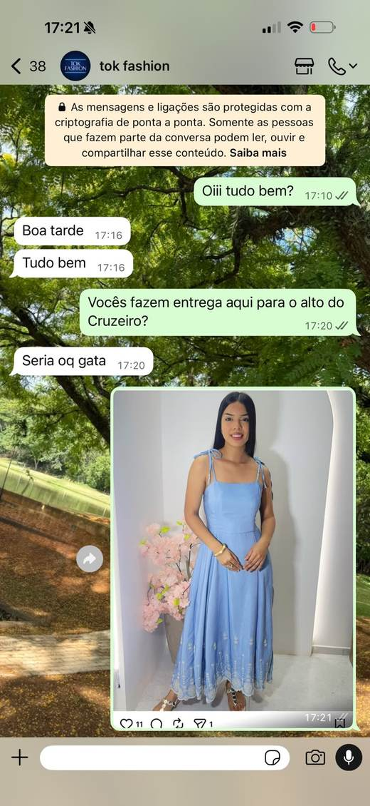

Elessandra, duas clientes prontas para comprar. Nenhuma venda.
Testamos os dois números que você mandou. Aqui está cada mensagem,
quanto tempo cada cliente esperou e o que precisa mudar a partir de segunda.
Preparado por Corvex Digital para Tok Fashion, 26 de agosto de 2026Consultoria de Vendas
14mensagens enviadas pela loja
11com erro de português
0perguntas feitas pela loja
0tentativas de fechar
15h25a maior espera
Você pediu o cliente oculto e nós fizemos. Duas clientes escreveram para a
Tok Fashion, cada uma em um número diferente, com a peça já escolhida. As duas perguntaram
entrega, tamanho, preço e forma de pagamento, que é exatamente o roteiro de quem está
com o cartão na mão. As duas saíram da conversa sem comprar, e em nenhum dos dois
atendimentos alguém perguntou o nome delas.
Este documento tem as duas conversas reconstruídas mensagem por mensagem, com o relógio
de cada espera. Depois vem o que travou a venda, a lista de erros de português com a
correção ao lado, e o roteiro pronto de como o mesmo atendimento deveria ter sido feito.
Os prints originais estão no final.
O dado que resume tudo. Somando as duas conversas, a loja mandou
14 mensagens de texto e não fez nenhuma pergunta. Quem atendeu só respondeu o que
foi perguntado e parou. Atendimento que só responde não vende, ele informa. E informação
a cliente acha sozinha no Instagram.
Conversa 1
O número Loja Zap, 40 minutos até a venda morrer
Resposta rápida, informação certa, e mesmo assim a cliente foi embora.
Loja Zap81 9867-5561
Oiii tudo bem?17:10
6 min
Boa tarde17:16
Tudo bem17:16
Vocês fazem entrega aqui para o alto do Cruzeiro?17:20
Seria oq gata17:20
print do post do Instagram, com a barra de curtidas aparecendo17:21
Vou ve se consigo a moto gata17:21
Tamos sem17:21
Quais tamanhos tem dele?17:23
1 min
Vou verificar gata17:24
Só veio esse gata17:26
Qual o valor?17:27
Ele tá de 229.9017:28
Tam único17:29
Tem desconto? No pagamento no pix?17:41
9 min
infelizmnete não, só temos desconto no a vista17:50
Fim da conversa. Ninguém mandou o Pix, ninguém perguntou se podia separar a peça.
A resposta que matou a venda. A cliente perguntou se tem desconto
no Pix e ouviu que só tem desconto à vista. Pix é à vista. Ela entendeu que não
existe desconto de jeito nenhum, e parou de escrever. Essa era a última pergunta antes
do fechamento, a pergunta de quem já decidiu comprar e só está procurando um motivo
para fechar agora.
O tempo de resposta aqui não foi o problema. Seis minutos para o primeiro oi, um
minuto para o preço. O problema é que ninguém conduziu. A loja disse que está sem moto
e não ofereceu outro jeito de entregar. Disse que só veio um tamanho e não ofereceu
outra peça. Disse o preço e não disse mais nada. Foram três nãos seguidos, nenhum
com plano B.
Conversa 2
O número da loja, 15 horas para dar bom dia
Aqui a cliente escreveu no fim da tarde e só teve resposta na manhã seguinte.
Loja tok fashion81 97911-8556
Boa tarde17:53
Moro aqui em vila nova17:53
Vi algumas peças no insta de vcs17:53
Fazem entrega?17:53
15 h 25 min
dia seguinte
Oi, bom dia. Tudo bem ? Nós mandamos pelos carros de lotação09:18
Tudo bem09:53
Tem esse em outras cores ? link de um post do Instagram09:53
15 min
Desse, só vamos ter essa cor meu bem10:08
Temos outros modelos10:08
Ele veste até qual tamanho ?10:23
25 min
Veste do P ao M10:48
Ah sim, e quais são os horários de entrega, como funciona?13:44
Sem resposta até o momento do print.
Quem escreve às 17h53 de um dia útil quer usar a peça no fim de semana. A resposta
chegou às 9h18 do dia seguinte, quinze horas e vinte e cinco minutos depois. Nesse
intervalo essa cliente passou na frente de pelo menos duas outras lojas do Instagram.
Repare também que a loja escreveu "Temos outros modelos" e não mandou nenhum.
Essa frase, sozinha, é uma venda perdida por preguiça. A cliente já tinha dito que mora
em Vila Nova, que viu as peças no Instagram e que quer entrega. Ela entregou tudo de
graça, e a loja não usou nada disso.
O diagnóstico
Os sete furos que estão derrubando suas vendas
Todos aparecem nas duas conversas, então não é um dia ruim de uma pessoa.
1
Ninguém perguntou o nome da cliente
Duas conversas, catorze mensagens, zero perguntas. Sem o nome não existe
relacionamento, não existe cadastro, não existe retorno depois. A cliente vira
um número no celular e some.
2
Nenhuma tentativa de fechar a venda
As duas perguntaram entrega, tamanho, preço e pagamento. Esse é o roteiro de
quem vai comprar. Ninguém mandou a chave Pix, ninguém perguntou "quer que eu
separe pra você?", ninguém marcou a entrega. A conversa simplesmente acabou.
3
Todo "não" saiu seco, sem alternativa
"Tamos sem" para a entrega de moto.
"Só veio esse" para o tamanho.
"Desse, só vamos ter essa cor" para a cor. Três nãos e
nenhuma segunda opção junto. Todo não precisa vir com um "mas".
4
A resposta sobre o Pix está errada
Perguntaram desconto no Pix e a resposta foi que só tem desconto à vista. Pix é
à vista. Além de errado, isso derrubou a venda no exato momento em que ela estava
pronta. Se não tem desconto, a resposta ainda precisa ter um sim dentro dela.
5
Os dois números respondem coisas diferentes
Um diz que está sem moto para entregar. O outro diz que manda por carro de
lotação. Um diz tamanho único, o outro diz que veste do P ao M. Se a mesma cliente
escrever nos dois, ela vai achar que uma das duas está enrolando.
6
A foto do produto é print do Instagram
A peça chegou na cliente como uma captura de tela do próprio post, com a barra
de curtidas e o botão de salvar dentro da imagem. Fora o acabamento, isso mostra
para a cliente quantas curtidas o post tem. Foto de produto tem que ser a foto,
limpa, e sair da galeria.
7
A tarde inteira sem atendimento
Uma mensagem das 17h53 respondida às 9h18. Outra das 13h44 sem resposta.
Seu anúncio roda o dia inteiro e no fim da tarde, que é quando a mulher sai do
trabalho e abre o Instagram, o WhatsApp da loja está desligado.
O português
Onze correções em catorze mensagens
A cliente não fala nada sobre isso, ela só decide que a loja é pequena.
Saiu assimSeria oq gata
CertoSeria o quê, gata?
Saiu assimVou ve se consigo a moto gata
CertoVou ver se consigo a moto, gata.
Saiu assimTamos sem
CertoEstamos sem.
Saiu assimVou verificargata
CertoVou verificar, gata.
Saiu assimSó veio essegata
CertoSó veio esse, gata.
Saiu assimEle tá de 229.90
CertoEle está R$ 229,90.
Saiu assimTam único
CertoTamanho único.
Saiu assiminfelizmnete não, só temos desconto no a vista
CertoInfelizmente não, só temos desconto à vista.
Saiu assimOi, bom dia. Tudo bem ?
CertoOi, bom dia! Tudo bem?
Saiu assimDesse, só vamos ter essa cormeu bem
CertoDesse modelo só temos essa cor, meu bem.
Saiu assimVeste do P ao M
CertoVeste do P ao M.
A regra prática. Vocativo pede vírgula antes ("obrigada, gata"),
frase termina com ponto, preço se escreve R$ 229,90 com vírgula e cifrão, e a
mensagem nunca sai sem reler. São três segundos por mensagem. Nenhuma cliente reclama
do português, ela só sente que está falando com uma loja pequena e vai negociar o preço
como se fosse feira.
O jeito certo
A mesma conversa, refeita do oi até o Pix
Mesmas perguntas da cliente, mesmas restrições reais da loja.
ClienteOiii tudo bem?
Loja, em até 5 minutosOi, boa tarde! Tudo bem sim.
Aqui é a Ana, da Tok Fashion. Como você se chama?
ClienteVocês fazem entrega aqui para o alto do Cruzeiro?
LojaFazemos sim, Camila! Pro Alto do Cruzeiro
a gente manda pelo carro de lotação, sai por R$ 15 e chega no mesmo dia se você
fechar até as 16h. Qual peça você viu?
ClienteQuais tamanhos tem dele?
Loja, com a foto limpa da peçaEsse veio em tamanho
único e veste do P ao M, fica soltinho. Qual número você costuma usar? Se ele não
for o seu, eu tenho outros dois nesse mesmo estilo que vão até o G.
ClienteQual o valor?
LojaEle está R$ 229,90.
Posso parcelar em 3x sem juros no cartão, ou no Pix sai R$ 229,90 à vista mesmo.
Quer que eu já separe o seu?
ClienteTem desconto? No pagamento no pix?
LojaNo Pix o valor já é o à vista, sem juros.
O que eu consigo fazer é a entrega por nossa conta pro Alto do Cruzeiro, aí você
economiza os R$ 15. Fecha assim? Já te mando a chave.
O que mudou. A loja perguntou o nome na primeira mensagem, deu
o preço da entrega junto com o sim, ofereceu alternativa antes da cliente pedir,
transformou o não do desconto em um sim (frete grátis) e terminou toda mensagem
com uma pergunta. A cliente nunca fica sem o próximo passo.
As provas
Os prints originais das duas conversas
Na ordem em que aconteceram.

Conversa 1O primeiro oi às 17h10 e a resposta às 17h16Conversa 1A peça enviada como print do InstagramConversa 1Sem moto para entregar e sem alternativaConversa 1O preço às 17h28 e o tamanho únicoConversa 1A resposta do Pix que encerrou a conversaConversa 2As 15 horas de espera e a pergunta sem resposta